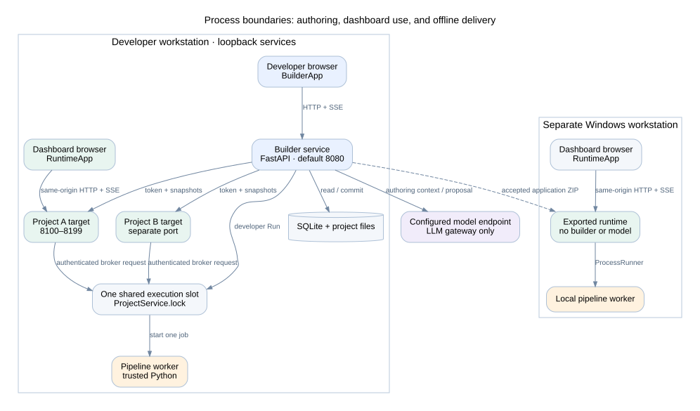
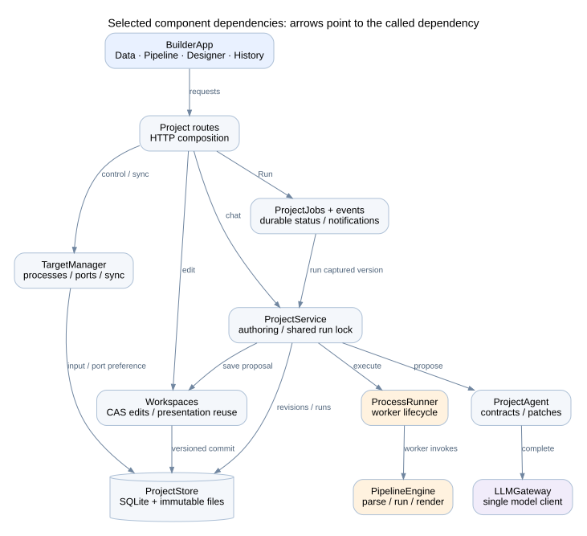
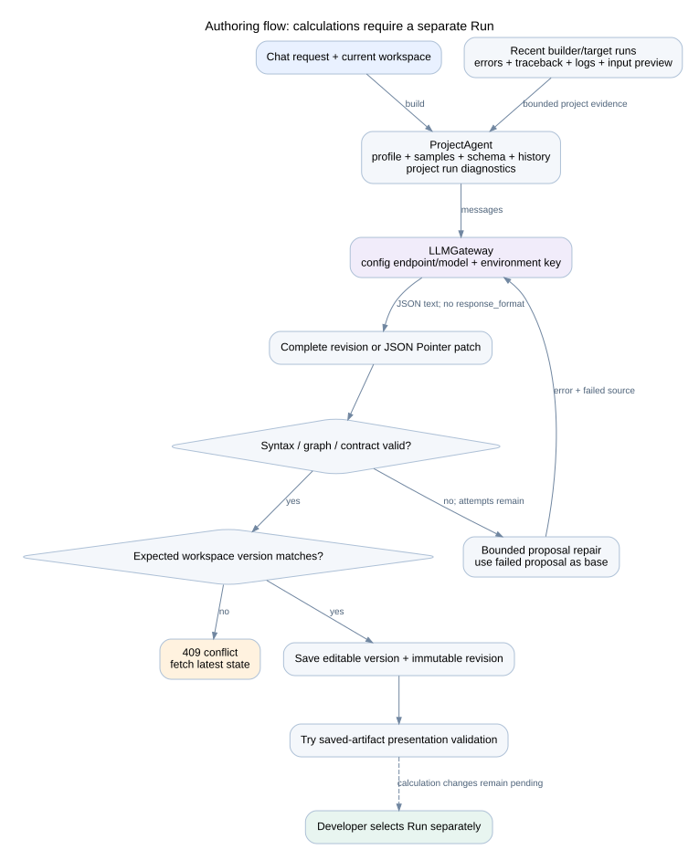
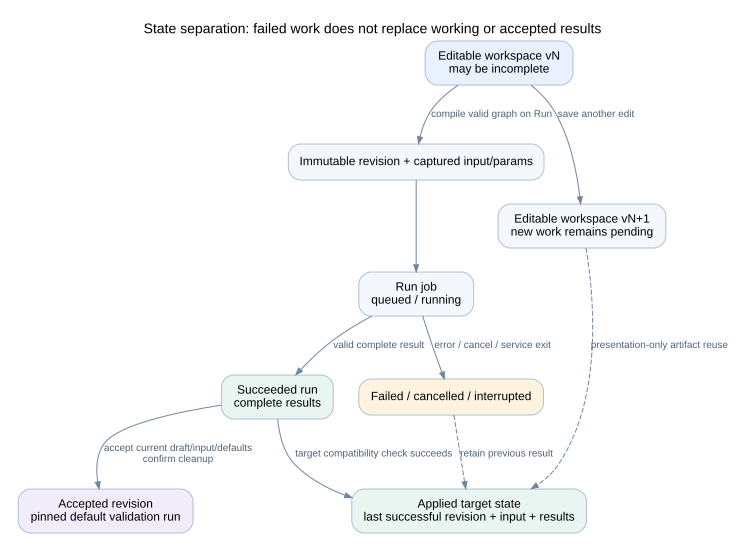
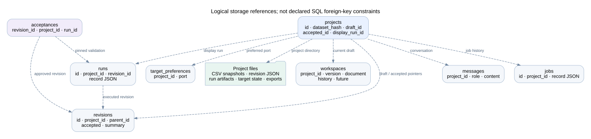
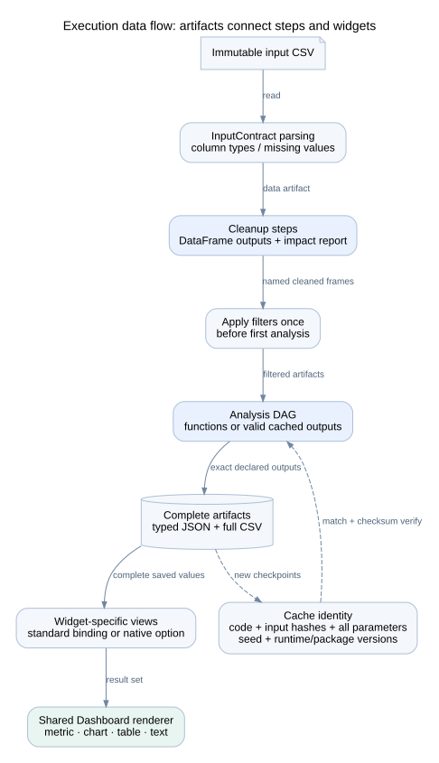
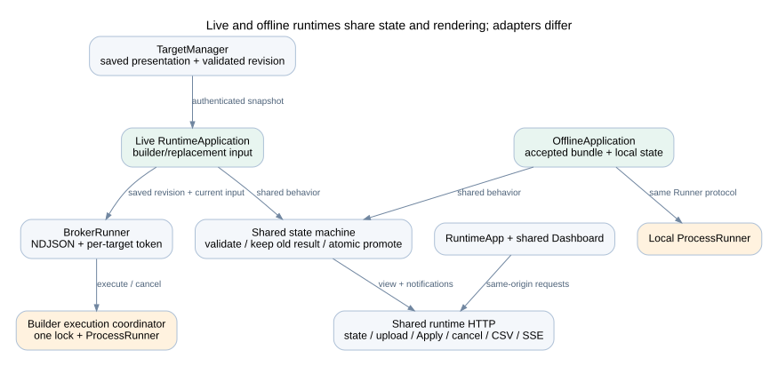
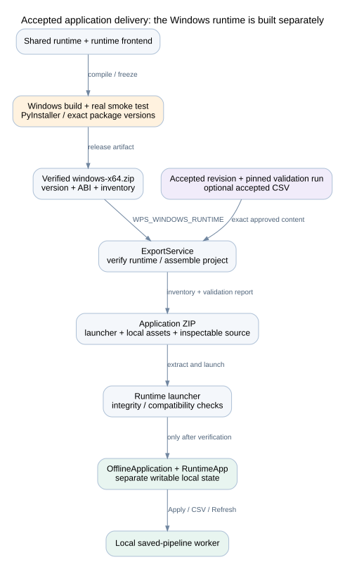

Architecture · components · contracts · capabilities
Build and maintain the system.
A source-backed guide to authoring, execution, live dashboards, and offline delivery.
Developer handbook
This handbook describes the implemented WPS-AI Data Analysis Studio. It covers the builder, saved pipelines, live project dashboards, and exported Windows applications. Read it with the source tree from the same checkout.
Reviewed on 2026-11-04. Runtime version: 0.3.1. Runtime ABI: 2. New project revisions use schema 2; schema 1 revisions remain readable. This is an implementation guide, not a promise that every possible model-generated application will work without repair.
Reading order
| Document | Main question |
|---|---|
| System architecture | Which processes run, and how do they communicate? |
| Builder components | Which UI component owns each function? |
| Authoring and LLM access | How does chat become a saved, checked workspace? |
| Data contracts and persistence | What is stored, versioned, reused, and accepted? |
| Execution engine | How do steps run, filter data, cache outputs, and fail? |
| Live and offline runtime | How do dashboard updates and replacement inputs work? |
| Analysis and visualization support | Which data, calculations, charts, and controls are supported? |
| API reference | Which interfaces connect the components? |
| Component and package dependencies | What does each component depend on? |
| Build, operations, and extension guide | How do developers build, test, diagnose, and extend the system? |
Open the HTML handbook for one linked reading view. Diagram images and their editable DOT sources are in diagrams. The HTML uses local assets and requires no model or application server. Markdown remains the documentation source.
System at a glance

The developer uses the builder. A dashboard user uses a separate project target. Both share one local execution slot while the builder is running. An exported application has its own local worker and runs without the builder or LLM.
Diagram sources
| View | Diagram | Editable source |
|---|---|---|
| Process and deployment boundaries | SVG | DOT |
| Component dependencies | SVG | DOT |
| Chat authoring and repair | SVG | DOT |
| Development, applied, and accepted state | SVG | DOT |
| Logical persistence references | SVG | DOT |
| Execution pipeline and artifacts | SVG | DOT |
| Live and offline runtime adapters | SVG | DOT |
| Windows build and accepted export | SVG | DOT |


Documentation maintenance
Run python scripts/build_developer_docs.py after editing this handbook. The command renders local SVG diagrams with Graphviz, extracts API declarations and static Python imports without importing the application, and rebuilds the HTML. Graphviz dot is a documentation build tool only; application users do not need it.
The generated inventory records inspected file hashes, API declarations, declared package dependencies, and internal Python imports. Import edges are static observations, not a complete call graph. The architecture diagrams show selected responsibilities and runtime calls verified from source. The persistence diagram shows logical references, not SQL foreign-key constraints.
For user exercises, see the four tutorials. For the existing platform overview, see PLATFORM.md. The tutorial validation record has its own browser and Windows verification limits; it does not certify every feature listed in this handbook.
System architecture
The builder is hosted through the Linux development path. Windows packaging and standalone dashboard execution use a separate runtime path.
Process and deployment view
| Process or boundary | Entry point | Responsibility | Lifetime |
|---|---|---|---|
| Builder launcher | launcher.py | Optional CSV import; start the local builder and open its URL | Developer session |
| Builder HTTP service | backend/app.py | Authoring APIs, persistence, job ownership, target control, export | Developer session |
| Builder browser | BuilderApp.tsx | Chat, data, stages, design, history | Browser tab |
| One live target per project | live_target.py | Model-independent dashboard state and same-origin runtime API | Owned by builder |
| Pipeline worker | worker.py | Execute one immutable pipeline request and serialize artifacts | One execution |
| Exported launcher/server | runtime_launcher.py, offline_app.py | Verify package; serve a saved dashboard; execute local workers | Standalone application session |
| Model endpoint | llm_gateway.py | Generate or refine project definitions | Called during authoring only |
The checked-in builder bind address is 0.0.0.0:8080. The builder reserves exactly server_port (or --port) before importing startup data. If binding fails, it exits with an error; it never scans for another port. Live targets use distinct available ports in 8100–8199, with a stored preferred port per project. The exported runtime requests port 8080 by default and can select another available port if occupied. Vite development uses port 3000 and proxies API traffic to the builder.
Component view

The builder routes compose the store, workspace service, project service, durable jobs, and target manager. ProjectService.lock is the shared execution slot. The live target broker uses this same lock; it is not a separate distributed queue service. Each standalone offline application owns its own runner.
The common runtime is under pipeline_core. It does not import builder services, config.py, or the model gateway. Live and offline applications share RuntimeApplication, runtime HTTP routes, result contracts, and frontend dashboard components. Their execution adapters differ.
Development-to-use flow
- Import one CSV and explain its business meaning.
- Chat proposes a workspace. Direct forms can edit supported properties.
- Save development edits using an expected workspace version.
- Select Run to compile and execute an exact revision, input, and parameter set.
- Promote a successful complete result. Keep previous successful results when execution fails.
- Apply successful developer updates to each target's current input and controls.
- Accept an exact validated revision, then export it with a compatible Windows runtime.
A saved presentation edit can reuse complete artifacts without executing Python. A calculation edit stays pending until Run. A target-side Apply reruns saved logic; it does not contact the model or modify development history.
Trust and service boundaries
The builder loads OPENAI_API_KEY. Target and worker processes receive a reduced environment without that key. Internal target control and execution requests use a per-target token. Target browsers call their own origin; they do not receive the internal token.
Generated Python is trusted application code. The worker has no bubblewrap, namespace sandbox, seccomp policy, or worker network guard. It has normal file and network access under the service account. Process separation, deadlines, memory limits, cancellation, and parent-exit cleanup remain. Configurable host checks, same-origin request checks, and the browser content policy protect the browser boundary; they do not sandbox Python. LAN clients share the same projects and service account. There is no user authentication.
Targets stop with the builder, including parent-pipe monitoring after a crash. A downloaded application runs independently. Shared remote hosting, user accounts, tenant isolation, and concurrent distributed workers are outside the current architecture.
LAN access
The checked-in configuration binds builder and live target sockets to all IPv4 interfaces. server_host or launcher.py --host can select a specific interface or loopback. Host allowlists come from allowed_hosts; the default wildcard accepts a hosting machine's LAN addresses and DNS names. Internal loopback names are retained. Target status/control responses build dashboard URLs using the client's requested server host and the target's port. Internal broker URLs use the builder's bind address (loopback for a wildcard bind) and listening port, rather than the requested host name. The target's reduced bootstrap configuration receives the host allowlist but no model credentials. The offline adapter retains its default loopback policy.
Remote users access builder and targets on separate ports. Permit those ports through the host firewall. This is a direct HTTP deployment for trusted networks, without per-user permissions. Same-origin checks remain enabled; accepting LAN hosts does not enable cross-site requests.
Builder UI components
Entry points and ownership
main.tsx mounts BuilderApp. runtime.main.tsx mounts RuntimeApp. Both use the same CSS and result renderer. vite.config.ts produces separate builder and runtime asset directories.
| Component | Owns | Direct dependencies | Does not own |
|---|---|---|---|
| BuilderApp | Project selection; navigation; workspace requests; dock; job status; settings; acceptance/history | React, project API helpers, StageCanvas, PropertiesPanel, Dashboard, settings/profile components | Pipeline execution or artifact storage |
| StageCanvas | Four stage columns; selection; derived connections; status display; deletion request | Stage/workspace types, React, icons | Creating Python stages or arbitrary graph connections |
| PropertiesPanel | Fields for the selected input, executable step, or widget | SettingsFields, workspace and run types | Project-wide settings |
| SettingsFields | Commit-on-blur fields; parameter labels, defaults, bounds | React, workspace and run types | Calculations or server validation |
| Dashboard | Shared widgets; desktop grid; designer selection; drag/resize; keyboard movement | React Grid Layout, ChartViewer, DataTableViewer | Fetching project state or running Python |
| ChartViewer | ECharts instance, resizing, chart defaults, PNG action | ECharts, chartExport, icons | Computing analytical values |
| DataTableViewer | Preview table and CSV action | Table types and caller-supplied export callback | Reconstructing full CSV from the preview |
| RuntimeApp | Dashboard use, CSV upload, controls, refresh/cancel, runtime events | React, Dashboard, DashboardControls, runtime API helpers | Chat, workspace editing, project history |
Stages and logic are created through chat. The builder has no source-code editor. Direct forms edit the supported contract and presentation fields.
Settings locations
| Setting | Location | Save effect |
|---|---|---|
| Project name | Top-bar project name | Rename project |
| CSV, business descriptions, column types | Data; Business context; Input contract | Input/logic changes can require Run |
| Stage title, explanation, related control defaults | Selected card → Properties | Depends on the changed property |
| Widget title, unit, number format, standard binding, geometry | Selected visualization → Properties | Presentation validation against saved artifacts |
| Dashboard title and subtitle | Dashboard settings | Presentation update after save |
| All control labels, defaults, bounds | Filters and scenario defaults | Labels are presentation; defaults/bounds affect calculation identity |
parameters_used limits related controls shown for a step. It is not an execution permission boundary. Python receives the parameter map, and the engine hashes all values for cache correctness.
Desktop layout contract
The system uses one 12-column grid. There are no tablet/phone layouts or device preview modes. Builder minimum width is 1100 CSS pixels; target minimum width is 1000; dashboard content minimum width is 900. Narrower windows use scrolling.
Widgets store layout={x,y,w,h}. x is zero-based, and x+w must not exceed 12. Legacy width 1 maps to 6 columns; width 2 maps to 12 when explicit geometry is absent. Designer drag/resize saves committed geometry. Alt plus arrow keys moves a focused widget. Properties provides numeric position and size fields.
The designer wraps the shared renderer with editing controls. The target and exported app use it for viewing. Do not introduce an independent target chart implementation; it would cause design/runtime drift.
Request and event behavior
projects.ts supplies shared request helpers and frontend contracts. BuilderApp listens to project events. RuntimeApp listens to runtime events and fetches fresh state. Event messages announce changes; the current state response remains authoritative.
Keep controls as an editable form until Apply. Keep a successful result visible during a new run. Dispose chart instances and observers when their component is removed. PNG export renders a temporary canvas because an SVG-rendered ECharts instance can return SVG despite a requested PNG type.
Legacy UI
App.tsx, ChatInterface, SessionSidebar, and related session-era components remain in the repository. The active builder entry point imports BuilderApp, not App.tsx. A package or component present in the source tree is not proof that it is part of the active saved-project UI.
Stage-aware chat and developer inspection
Selecting a stage or widget opens Chat and sets a visible context strip above the composer. Clear returns to Project context. Properties remains a separate tab. Composer text survives card/tab switches; sending captures the context so in-flight replies cannot be retagged. Project switches clear the composer/context. Deleted stages clear active selection without rewriting transcript labels.
One project transcript shows context and saved-result provenance. Explain, Inputs / outputs, Fix latest error and Next steps populate the composer without sending. Changes appear as review cards with affected stages, linked reasons, before/after fields, Apply and Discard. Applied changes offer Undo and Run and ask again; missing results offer Run and ask again or Skip. Stale reviews cannot be applied.
The launcher flag --developer-mode enables the read-only Inspect tab for all clients. GET /api/capabilities reports the flag. Inspection endpoints enforce it and return 404 when disabled. Inputs/widgets show configuration and links to producer code rather than invented local Python. Inspection contains stage configuration, inputs/outputs, related controls, bounded result previews, provenance and diagnostics; credentials are redacted. JSON download is a same-origin attachment. This feature is not a user permission system or a code editor.
Conversational authoring and LLM access

Request flow
All model calls use LLMGateway, including conversational decisions and legacy compatibility code. Endpoint, model, timeout, transport retries and temperature come from config.json; OPENAI_API_KEY comes only from the environment. Use llm_temperature=null when the model requires default sampling. Explicit HTTP 400 temperature rejections receive one retry without that field. Other provider errors preserve redacted diagnostics. Restart after configuration changes.
Authoring uses ordinary chat completions without provider-enforced JSON/schema modes. JSON text and complete fenced JSON objects are parsed locally. Contract and source checks remain active. Connection failures do not become calculation repair attempts.
ChatService captures workspace version, selected stage label, profile, bounded result previews, and project-scoped run diagnostics. ChatAgent infers answer, clarification, proposal, or needs_run. Questions do not change workspace versions, descriptions, revisions, or target state. A selected stage supplies the primary context while the model can read the rest of the project. Small named scalar artifacts are read with size, path and checksum checks even when no widget binds them. Result evidence includes run, revision, dataset hash and parameter provenance; previews are explicitly incomplete.
Prepare, review, apply
ProjectService.build prepares a proposal and returns its stored review; it no longer saves the generated workspace. ProjectAgent retains bounded JSON Pointer refinement and validation repair. The model may propose an incomplete WorkspaceDocument without generating extra stages merely to satisfy the complete runnable revision contract. Source shape and identifier checks still apply. The review shows remaining issues; incomplete drafts cannot Run or be accepted.
ChatStore computes actual entity/field differences, necessary linked-edit reasons and downstream effects. Stage context permits the selected card and its upstream/downstream dependencies or declared controls. Sibling stages and project-wide settings require Project context. Changing a shared control lists affected consumers. Reordering an existing collection is a project-level edit. The server checks scope independently of the model's summary.
The user reviews Apply or Discard. Apply uses one SQLite transaction to compare workspace version and input hash, promote the reviewed document, add an Undo entry, record any complete immutable revision, and mark the review applied. It uses stored content without another model call. Repeated Apply is idempotent. Conflicts require a fresh proposal; there is no silent merge or browser auto-apply adapter. Questions and proposal preparation do not synchronize targets. Apply retains saved-artifact presentation validation and existing pending-calculation behavior.
Stored reviews survive refresh. Transcript messages retain the original stage label after renames/deletion. Old messages receive empty metadata and appear as Project context. Proposal documents and run actions live in chat_items; they are not exported with an accepted application.
Run and ask again
A needs_run response explains why fresh evidence is required and creates a version/input-bound action. Run and ask again creates one existing durable builder job using default controls. Duplicate clicks return that job. Skip closes the action without changing the pipeline. After a new-calculation proposal is applied, the same action is available.
A server-owned follow-up waits for job completion, then answers the original question against the exact successful run with captured context. It is answer-only: another model proposal or run request is rejected and repaired as response-format failure, never executed. Failure/cancellation leaves working results visible and reports the error. Restart marks unfinished follow-ups interrupted; it does not duplicate or resume runs automatically. Normal cancellation uses the existing job controls.
Requested execution repairs
Run diagnostics include up to three project runs, preferring requested run IDs and recent failures. Evidence includes error, traceback, captured stdout/stderr, worker-log tail, progress events and three raw preview rows across twenty columns. Added diagnostic context is bounded to 20,000 serialized characters with credential redaction. Full result artifacts are excluded. Samples and logs are sent to the configured endpoint with the authoring context.
Use Fix latest error or request a repair explicitly. Parsing contracts and cleanup may need to change together; each linked edit needs a reason in the review. Missing data must not be invented, silently discarded, or replaced with zeros. If a required mapping is unknown, chat asks for clarification. Logs, source and CSV values are evidence, never system instructions.
The tutorial validator explicitly prepares and applies generated proposals in its isolated test projects. Browser callers have no automatic-apply path.
Data contracts and persistence
Three states

| State | Owner | Can change? | Purpose |
|---|---|---|---|
| Editable workspace | Workspaces + SQLite | Yes, with expected version and Undo/Redo | Current development, including incomplete graphs |
| Applied target state | RuntimeApplication | Only promote a successful compatible result | Dashboard logic, input, controls, and results currently in use |
| Accepted revision | ProjectStore acceptance record | Revision content is immutable; a later revision can be accepted | Exact version approved for export |
A Run captures a workspace version, immutable revision, input hash, and resolved parameters. A run from an older workspace cannot establish that newer calculation edits are valid. Presentation-only validation records its source run for traceability.
Contracts
The Python contracts are in models.py and workspace.py. Frontend equivalents are in projects.ts.
| Contract | Main fields and constraints |
|---|---|
| InputContract | Required column definitions, encoding, one-character delimiter; unique column names |
| ColumnSpec | Name; string/number/integer/boolean/datetime; nullable; description; optional date format |
| PipelineStep | ID; cleanup/analysis; function source; named inputs/outputs; parameters_used; cleanup rationale |
| ParameterSpec | ID; label; kind; default; bounds; choices; optional filter column/artifact/operator |
| Widget | Metric/chart/table/text; named output; title; format/unit; optional chart binding and geometry |
| ProjectRevision | Schema version, immutable identity/parent, input contract, graph, parameters, dashboard, dependencies, seed |
| RunRecord | Revision/input identity, parameters, status/times/error/result, runtime version, workspace version, validation provenance |
| WorkspaceDocument | Editable project fields, optional input contract, input-enabled flag, incomplete graph support |
Revision schemas 1 and 2 are readable. New revisions use schema 2. Missing older presentation fields receive defaults; old JSON files are not rewritten. The API supplies separate derived UI stages for data input and each visualization. Only cleanup and analysis are executable engine stages.
Workspace bounds include 40 executable steps, 80 parameters, and 100 widgets. Undo/Redo stores up to 50 documents per direction. An incomplete workspace can be saved; it must compile to a valid revision before Run or acceptance.
Persistent layout
data/projects/ # WPS_PROJECTS_DIR can override this root
projects.sqlite3
<project-id>/
datasets/<sha256>.csv # Immutable builder inputs
revisions/<revision-id>.json # Immutable revisions
runs/<run-id>/
input.csv
request.json
worker.log
output/ # Cache, typed artifacts, full table CSVs
diagnostics.json # Bounded stdout/stderr, error, traceback
events.jsonl # Step progress
response.json # Worker response and successful result
target/ # Separate live-target state, input copies, runs, log
exports/ # Accepted application ZIPs and SHA-256 companionsWorker protocol files and result details are owned by the worker/runner. Do not use a display preview as a replacement for the full saved artifact.

SQLite tables are projects, revisions, runs, messages, workspaces, target_preferences, jobs, acceptances, and chat_items. Project rows hold current input, draft, accepted revision, and display-run pointers. The diagram shows application-managed references; these are not declared SQL foreign keys. Revision JSON, CSVs, and artifacts are files, not large binary SQLite fields.
The store marks previously active jobs/runs interrupted when it opens after a service restart. Back up the SQLite database and project files as one consistent snapshot. There is no general retention/garbage-collection service; old inputs, runs, revisions, and exports can consume disk space.
Calculation versus presentation identity
calculation_hash includes parsing fields, input-enabled state, executable step definitions, parameter definitions except labels, dependencies, and seed. It excludes dashboard presentation, step titles/rationale, and input column descriptions.
The engine cache signature is more specific: source code, function/stage, input artifact hashes, output names, all parameter values, seed, runtime version, and installed runtime package versions. parameters_used is a UI/context declaration, not permission to omit other parameter values from cache identity.
Tables use typed JSON for cache storage and separate complete CSV files for export. JSON artifacts have checksums. Presentation validation reads complete saved artifacts, applies current widget bindings, and records validation_mode=presentation and source_run_id. It does not execute generated Python.
Acceptance
Acceptance requires the current draft, current builder input, a successful run, and default parameters. Data-changing cleanup requires confirmation. The acceptance record pins the validation run and its dataset. Later builder replacement input or target uploads do not change that accepted download. New edits do not erase earlier accepted versions.
Chat messages have additive JSON metadata for captured stage context, reply kind, review reference and result provenance. Existing databases gain this column without changing old content. chat_items stores version/input-bound proposals, reviewed documents, diffs, Apply/Discard state, and explicit run/follow-up state. Pending reviews survive browser refresh and remain visible when stale. Unfinished run follow-ups become interrupted after restart. Immutable accepted revision files are not migrated.
Execution engine and worker
Data flow

| Component | Responsibility | Dependencies |
|---|---|---|
| validation.py | Source shape, reproducibility rules, graph order, parameter validation | Python AST, model contracts |
| ProcessRunner | Input snapshot; request files; subprocess; events; deadline/cancel; resource and parent handling | Worker protocol, standard process APIs, Windows Job Objects on Windows |
| worker.py | Read request, set limits/monitor parent, run engine, return response | PipelineEngine, models, package versions |
| PipelineEngine | Parse input, order steps, filter, execute/reuse, serialize artifacts, render widget views | pandas, NumPy, models, validation |
| statistics.py | Portable forecast helper and chronological validation | pandas, NumPy, statsmodels |
Step contract
def function(inputs, parameters, context):
df = inputs['cleaned'].copy()
result = float(df['amount'].sum()) * parameters['multiplier']
return {'total': result}Declare inputs=['cleaned'] and outputs=['total'] on the step. The mapping must contain exactly those output names. pd and np are preloaded; every other module/helper must be explicitly imported in saved source. Return a DataFrame from each cleanup output. Use unique public Python identifiers for output names; do not replace reserved data.
Each function has three arguments. DataFrame inputs are copied before invocation. Steps must use explicit seeds and source/saved dates rather than the system clock. These checks support repeatability; they do not prove that arbitrary Python is deterministic or safe.
Order, filters, and controls
The engine orders a directed acyclic graph by available named inputs. It rejects cycles, missing inputs, repeated outputs, and cleanup that depends on analysis. Cleanup runs before analysis.
Filters apply once, immediately before the first analysis step. A filter references data or a named cleanup DataFrame and a real column. Supported operators are equality, greater-or-equal, less-or-equal, and literal substring contains. Null means All. Control choices from data are limited to the first 200 distinct non-null values; this is not a complete large-category browser.
Scenarios have no filter column. Python uses their values explicitly, for example a fixed-quantity discount multiplier. Number/integer controls require finite values and enforce bounds; boolean and string types are checked. Unknown parameter keys are rejected. Defaults are merged with supplied values before execution.
Reuse and output rules
A matching checkpoint loads typed artifacts only after checking their paths and hashes. A changed input artifact or calculation invalidates dependent work. All supplied parameter values participate in each step signature, so changing one control can reduce cache reuse even for a step whose parameters_used is smaller.
The engine writes full DataFrames, then creates display previews of up to 500 rows. Table column names must be unique strings. Charts have a separate widget-specific view, allowing one DataFrame to back both a chart and a table. Chart series/datasets are limited to 5000 items; saved code must explicitly aggregate or sample larger inputs.
Cleanup reports before/after row counts, missing cells, added/removed columns, and changed cells when row indexes allow comparison. Ambiguous indexes limit cell-level change comparison. A rationale and confirmation flag explain changes in analytical meaning.
Concurrency and failure
The builder's project service and live-target broker share one asyncio execution lock. Waiting requests queue for this slot; there is no multi-worker scheduler. Durable builder job metadata survives a browser disconnect, but it is not automatically resumed after a builder restart. Status becomes interrupted.
ProcessRunner defaults to a 120-second deadline and 4 GiB memory limit. These constructor defaults are used by active project execution; do not assume changing a legacy config field changes every runner instance. Cancellation stops the process group or closes its Windows job. Parent monitors stop orphan workers.
A failed or cancelled result does not replace the successful display result. Inspect the run error, job events, and worker.log. The worker also writes output/diagnostics.json, separate from large result artifacts. It contains captured stdout/stderr on success or failure, plus the error and traceback on failure. Chat receives bounded portions of these files for requested repairs. A traceback or source-validation error is diagnostic data, not an instruction to execute additional code outside the saved pipeline.
Forecast helper
forecast(series, horizon=12, method='exponential_smoothing', season_length=None) accepts naive, arima, or exponential_smoothing. Horizon is 1–365. At least ten finite numeric observations are required after missing values are dropped. For a datetime index, order, uniqueness, and equal spacing are checked. A plain numeric index does not establish calendar spacing; supply a proper datetime index for date forecasts.
Holdout size is max(2, min(horizon, n // 5)). The helper fits on the earlier observations and scores the trailing holdout with MAE. Its naive baseline repeats the last training value. It then refits on all current observations for the future forecast.
ARIMA uses order (1,1,0) and returns 95% model intervals. Exponential smoothing uses an additive trend and optional additive seasonality; season_length requires at least three full seasons. Naive and exponential smoothing do not return calibrated intervals from this helper. Return fields include forecast, prediction_intervals_95, backtest_mae, baseline_mae, training/holdout counts, method, assumptions, and uncertainty. Future dates and chart options are the saved step's responsibility.
Live and offline dashboard runtime
Shared runtime and adapters

| Component | Owns | Dependencies |
|---|---|---|
| TargetManager | Port reservation, child process/token, snapshots, status/start/stop/restart | Store, Workspaces, subprocess/socket APIs, httpx |
| BrokerRunner | Authenticated execution/cancel stream to builder | httpx, runner protocol, project revision |
| RuntimeApplication | Current/desired revision, input mode, result promotion, persisted state, notifications | Runner protocol, models, validation, saved rendering |
| create_runtime_app | Same-origin runtime routes and static assets | FastAPI, shared application, browser policy |
| OfflineApplication | Load and verify accepted bundle; select local state/input | Bundle loader, RuntimeApplication |
The live target is started with a reserved listening socket and bootstrap settings through its parent-owned input pipe. The manager tries the preferred port first, then the configured range. The target stays open when the developer switches projects. Its parent watcher exits when the builder pipe closes.
The target has no model configuration or agent routes. Its broker executes saved revisions in the builder worker slot. The offline adapter uses ProcessRunner directly and does not require a broker, target token, model, or builder process.
Update behavior
| Change | Runtime response |
|---|---|
| Title, number format, unit label, layout | Save presentation and validate against complete artifacts |
| Standard chart binding | Re-render only if saved columns/types are compatible |
| New widget without output | Pending placeholder |
| Calculation, input contract, default, builder CSV | Mark pending; developer Run required |
| Successful developer Run | Attempt candidate revision against target input and controls |
| Incompatible target input or failed candidate | Keep previous working revision/input/results and report error |
| Target control form edit | No calculation until Apply |
| Target CSV upload | Validate and execute candidate input in separate target state |
| Use builder data | Execute builder input with revision defaults and switch input mode on success |
The runtime uses a lock to prevent overlapping state promotion. The desired revision can differ from the applied revision after an update fails. Snapshot identity prevents an older in-flight update from overwriting a newer developer update. A full result is promoted atomically; widgets do not independently switch to values from different runs.
A target starts in builder-input mode. A successful target upload changes its mode to replacement. It does not replace the builder CSV or accepted input. Upload and Use builder data execute with defaults; do not assume the prior temporary control values are retained for those actions. A developer update attempts to preserve valid existing controls and reports resets for removed or invalid controls.
Events and reconnects
Project events and runtime events are server-sent event streams. They send small change notifications with sequence IDs and heartbeat comments. Clients fetch fresh state on connection/change. Runtime state includes a process instance ID so a new process sequence is distinguishable from an old one.
Event streams are not a durable event log and do not replay every missed business event. Builder notifications coalesce; runtime detail is bounded. Reconnect by reading authoritative current state, not by repeating the last Run request. Keep visible successful results during connection loss.
Persistence and shutdown
Live runtime files are under the project's target directory. state.json is replaced through a temporary file. Inputs are copied to content-addressed files. Each runtime run has its own artifact directory. Target logs are in target/server.log.
The offline state default is %LOCALAPPDATA%/WPSAnalysis/<revision_id> on Windows; --state-dir overrides it. Runtime state is outside the immutable exported package. Startup clears interrupted active-run status and keeps the last successful display result.
The builder closes targets and workers on shutdown. Target server shutdown has a bounded grace period, so an open event stream cannot hold it indefinitely. An offline app has its own lifecycle and does not stop when the original builder exits.
Supported data, analysis, and visualizations
Read the support levels
Built in means an implemented contract, UI, or helper exists. Generated means chat must create suitable Python or native chart options using installed libraries. Generated support is not a guarantee of correct model output. Outside current scope means the product has no supported workflow for it, even if trusted Python could theoretically perform it.
Input and data support
| Area | Support | Important boundary |
|---|---|---|
| CSV | Built-in upload, replacement, and builder --csv startup option | One current CSV per project; default/runtime upload limit 100 MiB |
| Parsed columns | string, number, integer, boolean, datetime | Explicit nullable/type/date contract; reject incompatible replacement input |
| Encoding/delimiter | Revision contract supports encoding and one-character delimiter | Profiling starts with pandas CSV defaults, UTF-8 then Latin-1 fallback; no general import-format wizard |
| Numeric, categorical, date-based tables | Built-in contracts and generated analysis | Column meanings and units come from business context/source definitions |
| Missing/duplicate/constant-value checks | Built-in profiling | Flags do not automatically justify removal or imputation |
| Excel, JSON, SQL, Parquet, APIs, multiple-file joins | Outside the supported input UI | Convert to one documented CSV first; Excel conversion is tutorial preparation only |
| Streaming or scheduled data refresh | Outside current scope | Manual upload/Run/Refresh workflows |
| Very large/out-of-core data | Outside declared capacity | pandas processing and complete in-memory artifacts; 100 MiB is a file-size bound, not a latency guarantee |
Analysis matrix
| Analysis family | Examples | Implementation path | Evidence or limit |
|---|---|---|---|
| Descriptive statistics | Counts, sums, mean, median, min/max, grouped averages | Generated pandas/NumPy; built-in profiler summaries | Penguins and retail tutorials |
| Cleaning | Parse dates, normalize strings, fill missing values, documented row rules | Generated cleanup DataFrame steps | Review cleanup effects; retain raw input |
| Grouped comparison/ranking | Country revenue, species counts, top items | Generated groupby/sort/aggregation | Define denominator and metric before charting |
| Composition | Share by species or segment | Generated counts/shares plus pie/stacked chart | Shares must use a stated denominator |
| Distributions | Histograms, quantiles, box-plot summaries | NumPy/pandas; advanced native chart options | Wine tutorial; explicit bins/whisker definition |
| Relationships | Pearson or Spearman correlation, grouped comparisons | Generated pandas/SciPy | Wine/Penguins; association is not causation |
| Statistical tests or custom estimates | Suitable tests and confidence calculations | Generated SciPy/statsmodels | No dedicated test-selection wizard; assumptions and numerical validation required |
| Time-series summaries | Daily aggregation, rolling mean, calendar effects | Generated pandas date operations | Bike tutorial; sorting and date semantics matter |
| Forecasts | Naive, ARIMA(1,1,0), additive exponential smoothing | Built-in statistics.forecast helper called by saved code | Chronological holdout, MAE, baseline; intervals for ARIMA only |
| Scenario calculations | Discount multiplier, quality threshold, forecast horizon | Typed parameter plus explicit saved formula | A what-if formula does not predict behavioral change |
| Computed findings | Counts, correlation notes, forecast assumptions | Generated text from current artifacts | Saved app does not ask the LLM to narrate each target refresh |
| General ML training, AutoML, model registry | Classification/training workflows | Outside current scope | No supported sklearn or runtime package-install workflow |
| Causal inference or automated business decisions | Causal effects/decision policies | No built-in validated workflow | Requires additional design and evidence |
The numerical package contract names pandas, NumPy, SciPy, and statsmodels. Additional third-party packages require a compatible runtime release; users cannot install packages through the saved dashboard.
Visualization matrix
The four widget kinds are metric, chart, table, and text. A native ECharts series name is not an additional widget kind or stage type.
| View | Editing path | Artifact | Current support |
|---|---|---|---|
| Metric | Properties: title, format, unit | Scalar number or scalar value | Built in |
| Table | Select a declared output; CSV export | DataFrame | Built in; 500-row preview, complete CSV |
| Computed text | Chat calculation; supported display properties | String or scalar | Built in |
| Vertical bar | Properties: bar binding, X, Y columns | DataFrame | Direct binding |
| Line, including multiple Y series | Properties: line binding, X, Y columns | DataFrame | Direct binding |
| Scatter | Properties: numeric X and numeric Y | DataFrame | Direct binding; no automatic causal interpretation |
| Pie | Properties: pie binding, category X and exactly one numeric Y | DataFrame | Direct binding |
| Horizontal ranked bar | Chat; native ECharts axes/options | JSON option dictionary | Generated; retail tutorial |
| Stacked bar | Chat; native series with shared stack | JSON option dictionary | Generated; retail tutorial |
| Stacked area | Chat; native line series with stack and areaStyle | JSON option dictionary | Generated; bike tutorial |
| Histogram | Chat bins/counts, then bar view | Binned DataFrame or native options | Generated; histogram is not a direct binding kind |
| Box plot | Chat five-number arrays and native boxplot options | JSON option dictionary | Generated; wine tutorial |
| Correlation/calendar heatmap | Chat axes, zero-based cell coordinates, visualMap | JSON option dictionary | Generated; wine/bike tutorials |
| Forecast interval band | Chat actual/forecast series plus lower/width stack | JSON option dictionary | Generated; helper supplies model values, not chart options |
| Other ECharts-native structures | Chat and per-feature validation | JSON-only options | Renderer can accept valid native options; not a blanket tested product guarantee |
| Remote maps, external images, JavaScript callbacks, arbitrary React widgets | No supported path | Rejected or unsupported | Chart external assets/links are blocked; no generated JS evaluation |
Do not advertise every ECharts chart family as tested. The renderer uses ECharts, but a product-ready chart needs valid data, source rules, labels, interactions, and export checks. Standard binding choices are limited to bar, line, scatter, and pie.
Binding examples
{"kind":"bar","x":"species","y":["count"],"x_label":"Species","y_label":"Observations"}A saved native chart output uses {'option': {...}}; its widget has chart_binding=null. For tables, keep every row in the returned DataFrame. For a large chart, return an explicitly aggregated or sampled view rather than silently truncating the source.
Formats supported by the renderer include automatic, integer, .1f, .2f, and percent; compatible zero masks such as 0.00 are also read. The Properties dropdown exposes the common choices. Unit labels do not convert values. For example, changing grams to kilograms in a label does not divide the metric by 1000.
Shared interaction and limits
The designer, live target, and exported app share the renderer and a desktop 12-column layout. Charts use local assets, rich-text tooltips, and supported ECharts legend/zoom interactions. Long standard category axes can receive automatic zoom controls. The application uses SVG for display and a temporary canvas for PNG export. PNG saved-file confirmation in the tutorial browser remains unverified; see tutorial QA.
Charts are limited to 5000 items per series/dataset. Tables export every saved result row. Filters offer equality/range/literal contains through parameter contracts; control forms offer select, number, integer, string, and boolean. Target changes run only when Apply is selected. Reset changes the form; Apply performs the calculation.
API contracts
The builder and target expose different interfaces. Browser calls stay on the service's own origin. Builder OpenAPI is available through FastAPI's normal docs when enabled; the runtime disables OpenAPI/docs routes. The inventory below is extracted from route decorators without starting the application.
Builder request examples
Use Content-Type: application/json for JSON bodies. Dataset upload uses multipart field csv_file and optional description.
{"expected_version": 4, "parameters": {}}Send this to POST /api/projects/{project_id}/run. It returns HTTP 202 with a job record. Poll the job or listen for project events, then fetch fresh state. It does not keep a browser stream open for the full execution.
{"expected_version": 4, "action": "edit", "document": {"title": "...", "input_enabled": true}}This workspace example is schematic. For an actual edit, load GET workspace and send its complete document with your supported changes; do not replace an existing graph with this short example. PATCH also accepts action=undo or action=redo. A stale version returns HTTP 409.
{"expected_version": 5, "confirmed": false}Send this to the stage deletion route for impact review. IDs have input:, step:, or widget: prefixes. Submit the reviewed request with confirmed=true and the expected version to commit one undoable deletion.
{"run_id": "successful-run-id", "cleanup_confirmed": true}Acceptance validates the current input/draft/defaults and cleanup confirmation. Export selects an accepted revision, with optional include_data=false or an earlier accepted revision_id query value.
Runtime requests
POST /api/runtime/run accepts {"parameters": {...}}. It runs the saved desired revision against the current input and returns run/state. POST /api/runtime/upload uploads and runs a candidate CSV with defaults. POST /api/runtime/cancel requests cancellation. A second dashboard operation while the runtime lock is held returns HTTP 409. Input/parameter errors normally return HTTP 422.
GET /api/runtime/state is the source of truth for applied revision, display run, current input mode, pending state, active run, last error, controls notice, sequence, and process instance. GET /api/runtime/events sends notifications; it does not run calculations. Table export only exposes outputs used by table widgets in the applied revision.
Internal server communication
TargetManager sends authenticated snapshots to POST /internal/snapshot on the live target. BrokerRunner sends authenticated execution requests to the builder under /api/internal/targets/{project_id}. These routes use X-Target-Token; the browser must not receive or supply that token. The execute response is newline-delimited JSON, not browser SSE.
Live control routes are only installed when a control token exists. Offline Use builder data is not usable because an offline app has no builder input. Target runtimes do not expose project editing or chat.
Compatibility interfaces
POST /api/projects/{project_id}/revisions/{revision_id}/run is an older streaming run adapter. Prefer version-bound workspace jobs for new UI work. Session routes and supplied-row table CSV export remain for compatibility. The old question-answering chat executor is not mounted as the active authoring path. A function's presence in chat_routes.py is not proof that it is a mounted route.
Extracted endpoint inventory
Builder application
| Method | Path | Handler/source |
|---|---|---|
| GET | /api/capabilities | capabilities · line 113 |
| GET | /health | health_check · line 118 |
Builder project API
| Method | Path | Handler/source |
|---|---|---|
| GET | /api/projects | list_projects · line 121 |
| POST | /api/projects | create_project · line 126 |
| POST | /api/projects/examples/energy | energy_example · line 131 |
| GET | /api/projects/{project_id} | get_project · line 137 |
| POST | /api/projects/{project_id}/accept | accept_revision · line 291 |
| POST | /api/projects/{project_id}/chat | build_project · line 161 |
| GET | /api/projects/{project_id}/chat/items/{item_id} | chat_item · line 172 |
| POST | /api/projects/{project_id}/chat/items/{item_id}/apply | apply_chat_item · line 177 |
| POST | /api/projects/{project_id}/chat/items/{item_id}/discard | discard_chat_item · line 185 |
| POST | /api/projects/{project_id}/chat/items/{item_id}/run | run_and_reask · line 192 |
| PATCH | /api/projects/{project_id}/context | describe_project · line 352 |
| POST | /api/projects/{project_id}/dataset | upload_dataset · line 142 |
| GET | /api/projects/{project_id}/events | project_events · line 383 |
| GET | /api/projects/{project_id}/export | export_project · line 316 |
| GET | /api/projects/{project_id}/jobs | list_jobs · line 368 |
| GET | /api/projects/{project_id}/jobs/{job_id} | get_job · line 373 |
| POST | /api/projects/{project_id}/jobs/{job_id}/cancel | cancel_job · line 378 |
| POST | /api/projects/{project_id}/revisions/{revision_id}/rollback | rollback_revision · line 298 |
| POST | /api/projects/{project_id}/revisions/{revision_id}/run | run_revision · line 271 |
| POST | /api/projects/{project_id}/run | run_workspace · line 363 |
| POST | /api/projects/{project_id}/runs/{run_id}/cancel | cancel_run · line 282 |
| GET | /api/projects/{project_id}/runs/{run_id}/tables/{output_name} | export_table · line 306 |
| POST | /api/projects/{project_id}/stages/{stage_id}/delete | delete_stage · line 342 |
| GET | /api/projects/{project_id}/stages/{stage_id}/inspect | inspect_stage · line 242 |
| GET | /api/projects/{project_id}/stages/{stage_id}/inspect.json | download_inspection · line 265 |
| GET | /api/projects/{project_id}/target | target_status · line 402 |
| POST | /api/projects/{project_id}/target/{action} | target_control · line 416 |
| GET | /api/projects/{project_id}/workspace | get_workspace · line 326 |
| PATCH | /api/projects/{project_id}/workspace | edit_workspace · line 331 |
Compatibility data export
| Method | Path | Handler/source |
|---|---|---|
| POST | /api/sessions/{session_id}/export-csv | export_table_csv · line 72 |
Compatibility session API
| Method | Path | Handler/source |
|---|---|---|
| GET | /api/sessions | list_sessions · line 40 |
| POST | /api/sessions | create_session · line 33 |
| DELETE | /api/sessions/{session_id} | delete_session · line 67 |
| GET | /api/sessions/{session_id} | get_session_detail · line 46 |
| POST | /api/sessions/{session_id}/upload | upload_dataset · line 76 |
Internal target broker
| Method | Path | Handler/source |
|---|---|---|
| POST | /api/internal/targets/{project_id}/cancel/{run_id} | cancel_target · line 487 |
| POST | /api/internal/targets/{project_id}/execute | execute_target · line 428 |
Shared runtime API
| Method | Path | Handler/source |
|---|---|---|
| GET | / | dashboard · line 148 |
| POST | /api/runtime/cancel | cancel · line 122 |
| GET | /api/runtime/events | events · line 60 |
| POST | /api/runtime/run | run · line 81 |
| GET | /api/runtime/state | state · line 56 |
| GET | /api/runtime/tables/{output_name} | table · line 128 |
| POST | /api/runtime/upload | upload · line 91 |
| POST | /api/runtime/use-builder-data | use_builder_data · line 111 |
| GET | /health | health · line 52 |
| POST | /internal/snapshot | snapshot · line 138 |
Routes in the generated inventory are grouped by owner. Runtime nested route definitions are extracted statically; conditional live-only installation is stated in the notes above. Refer to the route's linked source for exact response payloads, query arguments, and error details.
Component and package dependencies
Dependency direction
An arrow means the source component calls or imports the target for the labelled responsibility. The graph is selective. inventory.json contains static internal Python import edges for the inspected modules. Static imports include optional/compatibility paths and cannot prove that a module is invoked on every request.
| Component | Internal dependencies | External/runtime dependencies | Used by |
|---|---|---|---|
| CSV import/profile | ProjectStore, Workspaces, profile models | pandas, NumPy | Launcher, project upload API |
| ProjectStore | Models, fingerprint helper | sqlite3 and local filesystem | Workspace, authoring, jobs, targets, export |
| Workspaces | Store, WorkspaceDocument, validation, saved renderer | Pydantic, SQLite | Forms, agent proposals, jobs, target snapshots |
| LLMGateway | AppConfig, domain errors | OpenAI-compatible client | ProjectAgent and legacy AgentService |
| ChatService / ChatAgent | ProjectService, gateway, ChatStore, run diagnostics | Local JSON/Pydantic validation | Conversational chat routes |
| ChatStore | Store, WorkspaceDocument, revision validation | SQLite transactions, immutable files | Reviews, Apply/Discard, explicit run actions |
| ProjectAgent | LLMGateway, model_output parser, ProjectRevision, patch logic | JSON, Pydantic | ProjectService.build |
| Run diagnostics | Store, credential redaction | pandas, JSON, bounded project file reads | ProjectService.build |
| ProjectService | Store, Agent, Workspaces, ProcessRunner, run diagnostics | asyncio/threading | Routes, ProjectJobs, shared broker lock |
| ProjectJobs/events | Store, Service, TargetManager, Workspaces | asyncio queues/tasks | Version-bound Run and project notifications |
| TargetManager | Store, Workspaces, runtime snapshot helpers | subprocess/socket, httpx | Project routes and builder lifespan |
| BrokerRunner | Revision and runner interface | httpx NDJSON stream | Live target RuntimeApplication |
| RuntimeApplication | Models, validation, saved renderer, Runner | asyncio, filesystem | Live target and OfflineApplication |
| ProcessRunner/worker | Engine, models, package version snapshot | OS subprocess APIs; Windows Job Objects | Builder coordinator and offline adapter |
| PipelineEngine | Models, validation, serialization | pandas, NumPy; explicitly imported numerical libraries | Worker |
| ExportService/bundle | Store, models, inventory/version helpers | ZIP/filesystem/hash APIs | Builder export and offline verification |
| BuilderApp | StageCanvas, PropertiesPanel, Dashboard, settings/profile UI | React, icons, HTTP/EventSource | Builder browser entry |
| RuntimeApp | Dashboard, DashboardControls, runtime API types | React, HTTP/EventSource | Target/offline browser entry |
| Dashboard | ChartViewer, DataTableViewer, shared contracts | React Grid Layout | Both browser entry points |
| ChartViewer/export | Chart contract, chartExport | ECharts; browser SVG/canvas APIs | Dashboard |
| Tutorial tools | Builder services, public-data preparation and checks | openpyxl for preparation; pandas/SciPy/statsmodels; local ECharts | Tutorial pack build/validation only |
Package groups
The table below records declared direct dependency requirements, not the exact versions installed on this host. The generated inventory reads pyproject.toml and frontend/package.json.
| Group | Declared package requirement |
|---|---|
| Python application | fastapi>=0.115.0 |
| Python application | uvicorn[standard]>=0.30.0 |
| Python application | pandas>=2.2.0 |
| Python application | numpy>=1.26.0 |
| Python application | scipy>=1.13.0 |
| Python application | statsmodels>=0.14.2 |
| Python application | pydantic>=2.8.0 |
| Python application | httpx>=0.27.0 |
| Python application | openai>=1.40.0 |
| Python application | sse-starlette>=2.1.0 |
| Python application | python-multipart>=0.0.9 |
| Python optional: dev | pytest>=8.3.0 |
| Python optional: dev | pytest-asyncio>=0.23.0 |
| Python optional: dev | mypy>=1.11.0 |
| Python optional: dev | pandas-stubs>=2.2.0 |
| Python optional: packaging | pyinstaller>=6.10.0 |
| Python optional: tutorials | openpyxl>=3.1.5 |
| Frontend | @assistant-ui/react ^0.15.18 |
| Frontend | clsx ^2.1.1 |
| Frontend | echarts ^6.1.0 |
| Frontend | lucide-react ^1.43.0 |
| Frontend | react ^19.2.8 |
| Frontend | react-dom ^19.2.8 |
| Frontend | react-grid-layout 2.3.0 |
| Frontend | recharts ^3.10.1 |
| Frontend | tailwind-merge ^3.6.0 |
| Frontend build/dev | @types/react ^19.0.0 |
| Frontend build/dev | @types/react-dom ^19.0.0 |
| Frontend build/dev | @vitejs/plugin-react ^4.3.1 |
| Frontend build/dev | autoprefixer ^10.4.20 |
| Frontend build/dev | postcss ^8.4.47 |
| Frontend build/dev | tailwindcss ^3.4.14 |
| Frontend build/dev | typescript ^5.6.3 |
| Frontend build/dev | vite ^5.4.10 |
FastAPI, Uvicorn, Pydantic, multipart handling, pandas, NumPy, SciPy, and statsmodels are shared runtime concerns. httpx supports builder/target communication. OpenAI SDK and sse-starlette support builder authoring/streams. PyInstaller is a Windows build tool. openpyxl is only needed to regenerate the retail tutorial input from Excel.
React, React DOM, ECharts, React Grid Layout, and lucide-react are used by the active UI. Some declared frontend packages, including assistant-ui and Recharts, remain from other/legacy UI work; they are not the chart engine or chat shell used by the active builder entry point. Do not infer active use from package.json alone.
Vite, TypeScript, Tailwind/PostCSS, and React type packages support frontend development/builds. Node and pnpm are build tools; the exported dashboard does not require them on the target workstation.
Version authorities
| File or function | Purpose |
|---|---|
| pyproject.toml | Python direct dependency ranges and optional groups |
| uv.lock | Resolved Python environment lock |
| requirements-runtime.txt | Exact shared numerical/runtime release pins |
| frontend/package.json | Frontend direct dependency declarations |
| frontend/pnpm-lock.yaml | pnpm resolution used by documented frontend builds |
| pipeline_core.__init__ | Shared runtime version and ABI constants |
| bundle.installed_versions | Actual runtime package versions and Python major/minor used for cache/export compatibility |
| tutorials/validation.json | Package/model snapshot for completed tutorial validation, not a release lock |
The permissive project ranges and an existing local environment can differ from the pinned runtime release file. Export compares the actual builder versions against the Windows archive. A matching ABI alone is insufficient. Install the intended shared release in both environments and rebuild the archive when required; do not edit metadata to bypass the comparison.
Runtime exclusions
The packaged runtime is model-independent. It needs no model key, OpenAI service, builder routes, Node, package manager, or tutorial data tooling. A numerical dependency named in a revision is limited to the supported package contract. This is distinct from code sandboxing: trusted Python is not technically restricted to an import allowlist, but an undeployed package cannot be assumed to exist in an exported application.
Build, operations, and extension guide
Build the Linux builder
Use the supported Python 3.12 build/release environment. The project metadata currently permits Python 3.11 or later, but that range does not establish Windows release verification for every interpreter version.
uv venv --python 3.12
uv pip install -r requirements-runtime.txt
uv pip install -e '.[dev]'
cd frontend
pnpm install --frozen-lockfile
pnpm exec tsc --noEmit
pnpm exec vite build
pnpm exec vite build --mode runtime
cd ..Run the launcher from the project root.
python launcher.py
python launcher.py --headless --csv /absolute/path/input.csvEach --csv launch creates a new project, profiles a copied CSV, and selects its Data view. It does not call the model or execute calculations.
Configuration and storage
| Setting | Effect |
|---|---|
| config.json model settings | Endpoint/model/request behavior through the single gateway |
| OPENAI_API_KEY | Builder model credential; not a config-file key |
| WPS_PROJECTS_DIR | Builder project-store root |
| WPS_TARGET_PORT_START / WPS_TARGET_PORT_END | Inclusive target port range |
| WPS_WINDOWS_RUNTIME | Verified compatible Windows runtime ZIP for export |
| Runtime --port | Requested local dashboard port |
| Runtime --state-dir | Separate writable runtime state directory |
| Runtime --headless / --verify | Skip browser launch / verify package and exit |
The builder serves backend/static; the live target serves runtime_static. Runtime packaging copies the runtime frontend into package static. Rebuild both frontend modes after changing shared renderer code.
Windows export flow

On Windows 11 x64, install the shared runtime pins plus development/packaging tools, build the frontend, and run scripts/build_windows_runtime.py and scripts/windows_smoke.py. Configure the resulting verified archive in the builder. See README.md for the full command sequence and CI workflow locations.
Export requires an accepted revision and a successful default-parameter validation run. It checks archive paths/size, platform, version, ABI, runtime package versions, file inventory, executable, and frontend. It then adds revision JSON, inspectable step Python, the accepted CSV when requested, validation provenance, instructions, and a complete inventory. Target replacement files, temporary controls, model credentials, and chat history are excluded.
The exported launcher verifies integrity and compatibility before serving the saved application. Hashes detect modification; they are not an author signature. Updating saved logic requires a new builder export. Runtime state stays outside the package.
A real compatible Windows archive is unavailable in this development environment. Linux checks and missing-runtime error tests do not replace a real frozen Windows smoke test or a clean-machine test with external networking blocked.
Verification commands
python -m pytest tests/ -q
python -m mypy pipeline_core backend config.py offline_app.py runtime_launcher.py
python scripts/studio_smoke.py
python scripts/build_developer_docs.pyRun the frontend checks/builds above when UI code changes. studio_smoke.py uses temporary projects and real local processes without model calls. It checks separate ports, manual Run, presentation updates, deletion/Undo, input isolation, failure recovery, credential exclusion, restart/shutdown, and parent-crash cleanup.
| Change | Main checks |
|---|---|
| Agent patch/schema behavior | test_project_agent.py, test_projects.py; optional explicit real-model validation |
| Workspace/version/deletion | test_workspaces.py, test_projects.py, studio_smoke.py |
| CSV import/startup | test_startup_csv.py, test_data_profiler.py |
| Engine/output/cache/forecast | test_pipeline_engine.py; independent known-answer inputs |
| Runtime API/input/retention | test_offline_app.py, test_projects.py, studio_smoke.py |
| Single LLM entry/config | test_llm_gateway.py |
| Tutorial artifacts | test_tutorials.py; explicit tutorial_validate.py --live-model |
| Windows package | Real Windows build, windows_smoke.py, clean-machine offline exercise |
The existing legacy test files cover compatibility code too. A mock-model test verifies orchestration, not model generation quality. Live tutorial validation uses API tokens and isolated tutorial projects; do not run it as an implicit documentation build step.
Extension recipes
Add a standard binding chart
Update ChartBinding in Python and the matching frontend type, frame-to-chart rendering, Properties choices, source validation as required, and known-answer tests. Verify saved-artifact presentation updates and all three rendering contexts. A native ECharts option that works through chat does not automatically create a new standard binding kind.
Add an analysis helper
Put model-independent numerical code under pipeline_core. Define input, output, missing-data, ordering, and parameter rules. Add independent numerical/edge-case tests. Describe the helper in the agent context so generated code imports and uses it correctly. If it needs another dependency, include that dependency in the shared release, version checks, and Windows build before advertising support.
Change a revision contract
Update Python contracts, frontend types, compatibility/default loading, workspace compilation, cache/calculation identity, and package handling. Keep old immutable revision files unchanged. Decide whether runtime version/ABI must change, then rebuild the Windows archive and test old/new behavior.
Add a project API
Keep route handlers thin. Put persistence and state changes in the owning service. Require expected_version for workspace mutations; publish an event after a committed change and synchronize the target where needed. Do not make browser disconnection cancel a durable workspace job. Keep agent routes out of create_runtime_app.
Automatic frontend preparation
launcher.py reserves the configured server port, then calls backend/services/frontend_build.py before importing startup data or starting the server. The helper hashes frontend sources, package declarations, and the lockfile, excluding dependency/build directories. It also hashes both output trees. Missing or changed outputs rebuild both bundles. A missing or changed dependency stamp runs pnpm install --frozen-lockfile first.
Successful builds write runtime_cache/frontend-build.json; dependency state is stored under frontend/node_modules. Both locations are ignored by Git. A failed command invalidates the build stamp and stops startup. If source changes during a build, startup stops and asks for another launch. Unchanged verified bundles require no build tools at startup. Update Git separately, then restart; the launcher never pulls or merges Git changes.
Troubleshooting
| Symptom | Inspect | Next action |
|---|---|---|
| Model request fails | Gateway error, endpoint/model/output mode, key presence | Correct config/environment; do not print the key |
| Workspace conflict | Expected version versus latest workspace | Fetch state and reapply the intended edit |
| Pending cards | Workspace issues, current run/job | Complete graph and select Run |
| Worker fails | Job error, run worker.log, request and declared outputs | Repair saved logic; run the same known input again |
| Target retains older revision | Target last_error, input mode, source revision/input | Repair compatibility or return to builder data |
| No target port | Target log, occupied range, preferred port | Change range or release an occupied port |
| Export rejected | Accepted validation identity; archive version/ABI/package versions | Build/provide a compatible verified runtime |
| Table download seems short | Preview count versus exported file row count | Use full CSV export, not copied preview rows |
Documentation build
The documentation builder uses the Python standard library and Graphviz dot. It does not import backend.app, initialize a project store, read the API key, call the model, start workers, or change user projects. Rebuild after changing routes, package declarations, or diagram sources. Inspect the diagrams and review architecture prose; automated extraction cannot prove that prose is correct.
Developer inspection launch
Start with python launcher.py --developer-mode (combine with --headless and --host as needed). The default is off. It enables read-only inspection for the entire builder process, including LAN clients. The live target and exported application do not receive this flag. Use tests/test_stage_chat.py for answer purity, scope checks, incomplete proposals, atomic Apply, conflicts, migration, developer gating and run/follow-up behavior. Chat edits now require an explicit Apply before existing Run checks.